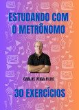
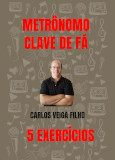
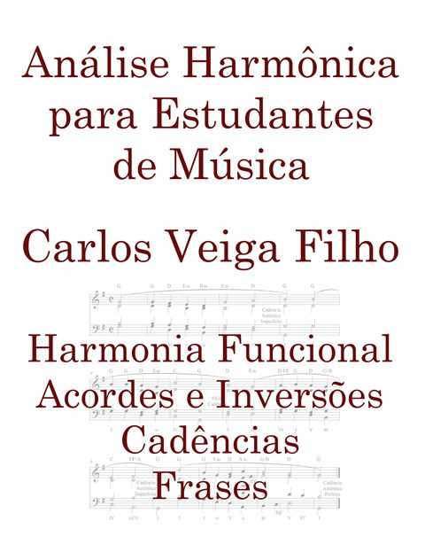

Vídeo do dia

Introdução ao solfejo
Solfejo 01 — Introdução
O início do canal Tutoriais em Música. Comece sua jornada no solfejo.
Uma nova escolha a cada dia. Volte amanhã para descobrir a próxima.
Um encontro com a música, todos os dias
Desenvolva seu ouvido, dê vida à partitura e descubra o prazer de aprender. Videoaulas e recursos para a música fazer parte do seu dia.
Do primeiro solfejo à análise harmônica.
Aprenda no seu ritmo. Pratique todos os dias.
Introdução ao solfejo
O início do canal Tutoriais em Música. Comece sua jornada no solfejo.
Uma nova escolha a cada dia. Volte amanhã para descobrir a próxima.
1.500+vídeos no canal
Desde 2010compartilhando música
Para todos os níveisda descoberta à prática
Conheça o acervoNovidade · Ferramenta gratuita
Leia a partitura.
Escute. Cante.
Acompanhe a partitura com o cursor, ouça a melodia com harmonia e ajuste o andamento para praticar no seu ritmo.
Gratuito, sem cadastro. No celular ou computador.
Português · English · Español
Seu próximo passo
Escolha um caminho.
O importante é começar.
Comece pela série de introdução ao solfejo, o primeiro projeto do canal, iniciado em dezembro de 2010.
Comece pelo solfejo 02 / PRATICARExercite o solfejo, reconheça intervalos e pratique ditados melódicos com ferramentas de estudo.
Explore as ferramentas 03 / APROFUNDARDescubra como os acordes se relacionam e avance na análise harmônica com o livro e seus capítulos de amostra.
Conheça o livroPercepção musical

Videoaulas · tonalidades
Exercícios agrupados por tonalidade para ouvir, cantar e compreender a música.
Escolha uma tonalidadeSérie completa · e-book gratuito
Aprimore seu solfejo com videoaulas e cante junto nos shorts da série.

Leitura rítmica · e-book gratuito
Desenvolva a leitura rítmica e encontre segurança no pulso musical.

Leitura musical
Ganhe fluência na leitura da clave de fá com exercícios para sua rotina de estudo.
Acesse o e-book gratuitoAprender fazendo
Escolha entre 70 solfejos, acompanhe a partitura e cante com o piano.
Abrir o SolfPratique a leitura musical e o canto com exercícios no navegador.
Pratique agoraVídeos, exercícios e games para perceber a distância entre as notas.
Escute com atenção e exercite a percepção das melodias.
Pratique agora
Para ir além da partitura
O livro Análise Harmônica para Estudantes de Música acompanha você na compreensão dos acordes e na construção de uma análise harmônica completa.
Edição impressa e Kindle · Capítulos de amostra disponíveis
Cursos
A música que fazemos juntos
Quem está por aqui
Sou maestro, arranjador e professor de percepção e teoria musical. Criei o canal Tutoriais em Música em 2010 para compartilhar esse trabalho e ajudar mais pessoas a desenvolver sua percepção musical.
Atualmente, rejo os corais da Câmara Municipal de Salvador, Escola Bahiana de Medicina e Fieb. Também conduzo os corais Ars Cantandi e Novos Cantos, além dos grupos vocais Pentágono e Divinas.
Aqui você encontra videoaulas, recursos para praticar, cursos e repertórios para continuar aprendendo e fazendo música.
Conheça o trabalho com os coraisContinue no YouTube